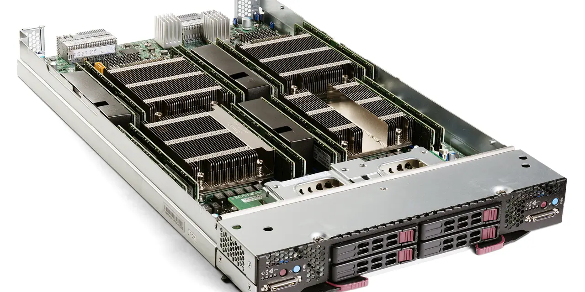

슈퍼 마이크로 컴퓨터는 AI 서버 사이클에서 가장 빠르게 이름이 떠오른 회사 중 하나입니다. 고객이 엔비디아 GPU를 확보하면 그다음에는 서버, 냉각, 전력, 랙 통합이 필요합니다. SMCI는 빠른 설계와 조립, 랙 스케일 통합으로 이 수요를 잡았습니다. 그러나 주주가 궁금해해야 할 질문은 매출 성장률이 아닙니다. 그 매출이 현금으로 남는가입니다.
AI 서버 사업은 고가 부품을 먼저 확보해야 합니다. GPU, 네트워크, 전원, 냉각 부품이 모두 비쌉니다. 고객 프로젝트가 늦어지면 재고가 쌓이고, 대금 회수가 늦어지면 매출채권이 늘어납니다. 그래서 빠른 성장은 운전자본 부담을 먼저 키울 수 있습니다.
슈퍼마이크로의 최근 실적 발표에서는 매출 숫자와 함께 매출총이익률, 재고, 영업현금흐름을 반드시 같이 봐야 합니다. AI 서버 주문이 강해도 현금흐름이 약하면 성장의 질은 낮게 평가됩니다.
AI 서버는 빨리 팔수록 현금이 먼저 묶입니다

SMCI는 제조업과 시스템 통합업의 경계에 있습니다. 자체 칩을 만드는 회사도 아니고 순수 소프트웨어 회사도 아닙니다. 고객이 원하는 서버 구성을 빠르게 맞춰 공급하는 능력이 핵심입니다. 이 장점은 AI 인프라 전환기에는 강력하지만, 마진 방어가 쉬운 사업은 아닙니다.
서버 매출은 커도 부품 원가 비중이 높습니다. GPU와 네트워크 부품 가격이 올라가면 매출은 커지지만 매출총이익률은 압박을 받을 수 있습니다. 투자자는 매출 성장률만 보면 착시를 겪습니다. 같은 10억 달러 매출이라도 얼마나 많은 현금이 남는지가 전혀 다릅니다.
SMCI의 좋은 뉴스는 AI 서버 수요가 여전히 크다는 점입니다. 나쁜 뉴스는 시장이 이미 그 수요를 알고 있다는 점입니다. 이제 주가는 “얼마나 파는가”보다 “얼마나 남기는가”를 요구합니다.
엔비디아와 델 사이에서 속도와 신뢰를 팔아야 합니다
관련 영상
Supermicro Q2 FY2026 Earnings Breakdown: Revenue, Margins, Guidance & SMCI Stock Analysis 2026
SMCI는 엔비디아 생태계와 밀접하게 연결되어 있습니다. GPU 세대가 바뀌면 서버 설계와 냉각 방식도 바뀝니다. 빠르게 대응할수록 고객 프로젝트를 잡을 수 있습니다. 그러나 GPU 공급이 늦어지면 SMCI의 출하도 늦어집니다. 강한 연결은 장점이면서 의존도입니다.
델테크놀로지는 AI 서버 시장에서 더 큰 고객 기반과 서비스 체계를 갖고 있습니다. SMCI는 속도와 맞춤형 설계로 차별화해야 합니다. 브로드컴은 네트워크와 맞춤형 칩 쪽에서 같은 데이터센터 예산을 봅니다. 이 경쟁 구도에서 SMCI가 장기적으로 높은 마진을 유지하려면 단순 조립을 넘어 열 설계, 랙 통합, 고객 운영 신뢰를 팔아야 합니다.
AI 서버 고객은 빠른 납기만 원하는 것이 아닙니다. 서버가 데이터센터에 들어간 뒤 안정적으로 돌아가야 합니다. 냉각 문제, 전력 문제, 부품 호환성 문제가 생기면 고객 신뢰는 빠르게 떨어집니다. SMCI의 경쟁력은 납기표와 품질표가 동시에 맞을 때 유지됩니다.
재고와 매출채권은 성장주의 진짜 비용입니다
운전자본은 성장주의 숨은 비용입니다. 매출이 빠르게 늘면 재고와 매출채권도 늘 수 있습니다. 특히 AI 서버처럼 고가 부품이 들어가는 사업에서는 작은 지연도 현금흐름에 큰 영향을 줍니다. 주주가 손익계산서만 보면 성장처럼 보이지만, 현금흐름표는 부담을 먼저 말해줍니다.
재고가 늘어난 이유도 구분해야 합니다. 고객 주문을 맞추기 위한 전략적 재고인지, 출하 지연 때문에 쌓인 재고인지에 따라 의미가 다릅니다. 매출채권도 마찬가지입니다. 대형 고객에게 납품한 뒤 회수가 정상적으로 진행되는지 봐야 합니다.
SMCI의 밸류에이션이 설득력을 가지려면 영업현금흐름이 회복되어야 합니다. 매출총이익률이 안정되고, 재고 회전이 좋아지고, 매출채권이 관리되면 시장은 성장을 더 믿습니다. 그렇지 않으면 AI 서버 매출은 커도 주가는 계속 의심을 받을 수 있습니다.
SMCI는 주문보다 내부통제와 현금이 먼저입니다
SMCI의 좋은 시나리오는 AI 서버 주문이 유지되고, 매출총이익률이 회복되며, 운전자본이 안정되는 경우입니다. 여기에 공급망 신뢰와 내부통제 신뢰가 함께 회복되면 주가는 성장률을 다시 평가할 수 있습니다.
나쁜 시나리오는 매출은 크지만 마진이 낮고, 재고와 매출채권이 계속 늘며, 고객 프로젝트가 지연되는 경우입니다. 서버 통합 사업은 매출 규모가 커 보이기 쉽지만, 현금흐름이 약하면 주주에게 남는 가치는 제한됩니다.
따라서 SMCI를 볼 때는 매출총이익률, 재고 회전, 매출채권 회수, 영업현금흐름, 백로그, 고객 집중도, 품질 이슈를 함께 봐야 합니다. 이 회사의 핵심은 AI 서버를 많이 파는 능력이 아니라 빠른 성장 속에서도 현금과 신뢰를 잃지 않는 능력입니다.
슈퍼마이크로는 속도가 강점인 회사입니다. 고객 요구에 맞춘 서버 구성을 빠르게 내놓고, 새로운 GPU 세대에 빨리 대응하는 능력이 있습니다. 하지만 속도가 빠른 회사일수록 내부 운영 관리도 빨라야 합니다. 재고, 품질, 대금 회수가 따라오지 못하면 성장 자체가 위험이 됩니다.
AI 서버 시장은 고객의 요구가 빠르게 바뀝니다. 공랭에서 액체냉각으로, 단일 서버에서 랙 단위 통합으로, 단순 납품에서 운영 효율 보장으로 기대가 이동합니다. SMCI가 계속 강하려면 부품 조달만 잘하는 것이 아니라 열 설계와 현장 통합 능력을 증명해야 합니다.
마진이 낮아지는 이유도 구분해야 합니다. 전략적으로 대형 고객을 잡기 위해 낮은 마진을 감수하는 것인지, 경쟁 때문에 가격을 못 받는 것인지, 부품 비용이 올라서 눌리는 것인지가 다릅니다. 같은 낮은 마진이라도 회복 가능성이 다릅니다.
내부통제와 보고 신뢰도 역시 주가에 영향을 줍니다. 하드웨어 회사는 매출 인식, 재고 평가, 고객 대금 회수에서 숫자가 복잡해질 수 있습니다. 시장이 숫자를 의심하면 높은 성장률도 할인됩니다. 빠른 성장에는 투명한 회계와 강한 운영 프로세스가 함께 필요합니다.
결국 SMCI는 AI 서버 테마주이면서 동시에 현금흐름 시험대에 오른 회사입니다. 매출, 매출총이익률, 재고, 매출채권, 영업현금흐름, 고객 집중도, 품질 이슈가 같은 방향으로 좋아져야 합니다. 한두 분기 매출 급증보다 이 조합의 안정성이 더 중요합니다.